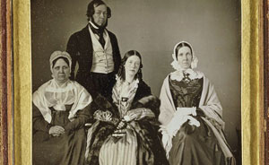

This is an archived copy of History Matters, provided by the Roy Rosenzweig Center for History and New Media. To explore this content in a new interface, visit Who Built America?.

America’s First Look into the Camera: Daguerreotype Portraits and Views, 1839–1864
http://memory.loc.gov/ammem/daghtml/daghome.html
Created and maintained by the Library of Congress.
Reviewed July 2009.
Comprised of more than seven hundred images from 1839 through 1860, the majority from Matthew Brady’s studio, this archive is both fairly large compared to other online daguerreotype collections and broadly representative of daguerreotype subjects: portraits of notable (and not so notable) Americans, occupational portraits, architectural views, landscapes, and a clutch of miscellaneous images that defy categorization. Like many of the other Library of Congress online collections, America’s First Look into the Camera is accessible both by browsing a subject index (tedious but serendipitous) and via a keyword search. The results are displayed either as a list or, more practical for an image-based collection, as a thumbnail gallery. Accompanying the archive is a special presentation, “Mirror Images: Daguerreotypes at the Library of Congress” (http://memory.loc.gov/ammem/daghtml/dagpres.html) that introduces major strengths of the collection and provides commentary. Other auxiliaries of varying utility, such as collection information, a timeline and brief history of daguerreotype development, a bibliography, and guides to other daguerreotype collections, augment the archive.

Like most image archives, America’s First Look into the Camera possesses considerable strengths and significant weaknesses. One of the singular strengths of the archive is the variety of formats available to the researcher or teacher. The range of formats furnishes an image large enough for study and provides the raw materials for a print image. This is especially important for daguerreotypes because a daguerreotype’s detail exists literally on the molecular level, and an uncompressed TIFF (tagged image file format) image can be converted into a respectable print version, thereby preserving the image’s fine detail. The archive’s weakness lies, alas, in its production values. Most of the images are black and white rather than color, and this circumstance affects the information available for study and interpretation. Similarly, some of the images have odd color casts or distracting shadows. The library “Learning Page” (http://www.loc.gov/teachers/classroommaterials/connections/daguerreotype/) also links to the collection. While it provides an assortment of learning activities, teachers, especially history or social studies instructors, will want to expand on several of the options to include questions about historical context. What, for example, might “occupational” daguerreotypes suggest about skilled work in antebellum America? Instructors may also wish to craft assignments based on the daguerreotype archive that make greater use of the World Wide Web.
Other repositories may have larger physical collections (such as the J. Paul Getty Museum) or better production values (the Nelson-Atkins Museum), but the bulk of their images are not available online or not presented in a way that renders them amenable for teaching or research. Created in 2002, America’s First Look into the Camera may be old in Internet time, but it still demonstrates standards that other photographic archives might emulateproviding large enough images in flexible formats suitable for a range of uses.
Paula Petrik
George Mason University
Fairfax, Virginia